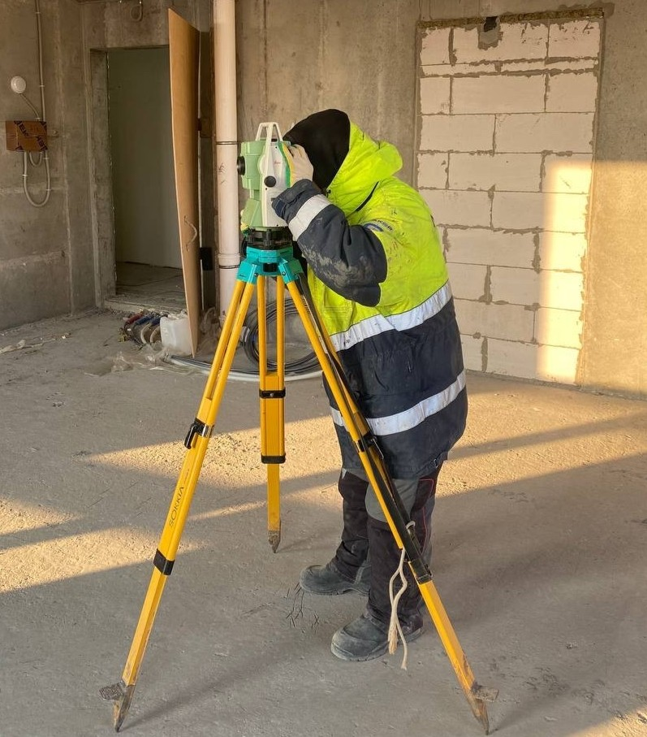
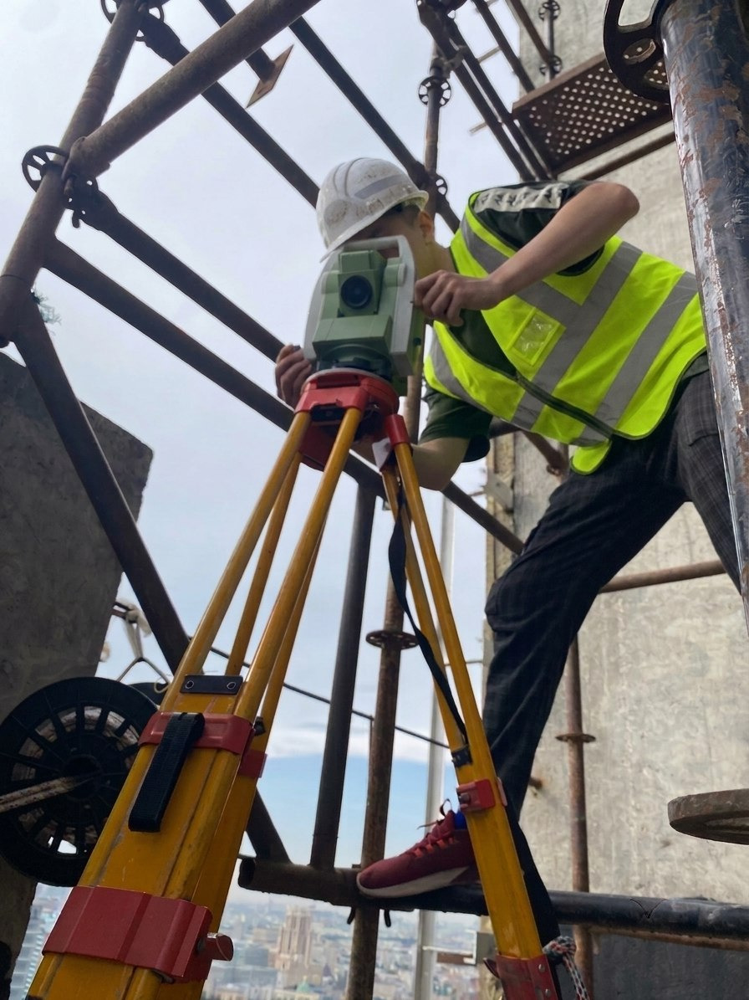
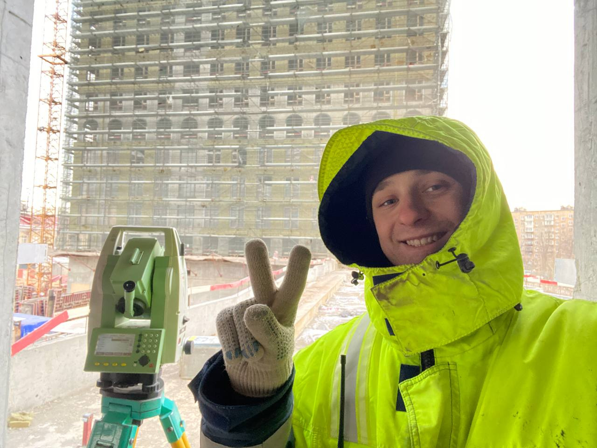

Даниил Сапожков
Специализируюсь на полевых и камеральных работах, контроле геометрии конструкций, разбивочных работах и подготовке исполнительной документации.
Работаю на объектах в Москве (ЖК Шагал, ЖК Шифт, ЖК Мичуринский проспект и другие).
От помощника до самостоятельного геодезиста
Начал карьеру в компании «Накор‑К» в должности помощника геодезиста в 2023 году. За 3 года освоил этапы геодезического сопровождения строительства: от приемки геодезической основы до сдачи ИГС заказчику.


Самостоятельно веду объекты в Москве – жилые комплексы на территории ЗИЛ, Гагаринский и другие. Работаю с высотными домами, сложными фасадами и витражами, требующими высокой точности.
В работе стараюсь быть внимательным и осторожным, соблюдаю требования нормативной документации (ГОСТы, СП). Постоянно повышаю квалификацию, слежу за обновлениями в геодезическом законодательстве для обеспечения надежности и качества результатов.

Московский автомобильно-дорожный колледж им. Николаева
Среднее специальное образование
Специальность: Строительство и эксплуатация дорог и аэродромов
Год окончания: 2022
Форма обучения: очная (4 года)
Планы на будущее
В ближайшее время планирую поступить в высшее учебное заведение по направлению «Прикладная геодезия», чтобы углубить знания и повысить свою квалификацию.